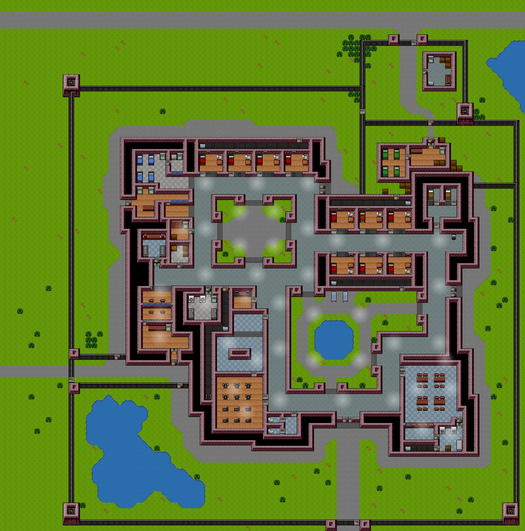

Center Perks
| Центр Перків | |
|---|---|

|
|
| Найпростіша в'язниця в Ескапістів. | |
| Деталі | |
| Тип в'язниці: Мінімальна безпека | |
| Складність: Дуже легко | |
| Засуджені | 10 |
| Охоронці | 5 |
Шановний [ім'я]. Ласкаво просимо до Центру Перкс - найзручнішої в'язниці низької безпеки в окрузі. Від імені персоналу тут бажаємо вам щасливого та спокійного візиту! Якщо вам набридне безкоштовне кабельне телебачення, ми пишаємось багатьма іншими захоплюючими заходами навколо майданчика.
~ Охоронець [джеден] про приїзд у тюрму
Центр Перкс (Перевод назви карти Center Perks) - це перша і найпростіша карта, присутні в грі, що її отримав Сталаг Флухт .
Центр Перкс також має власну унікальну музику у вільний час.
Резюме
Карта позначена як "дуже легка" складність, із зображенням в'язниці в приміщенні / на вулиці, побудованої на лузі. У ньому також є "зручні" версії основних елементів. Він утримує 10 ув'язнених (включаючи себе) і має 5 охоронців . Кожна клітина містить 1 ув'язненого . Це може бути єдиною в'язницею, де охоронці приємно розмовляють з ув'язненими, оскільки наглядач зазначає: "персонал тут бажає вам спокійного візиту". Якщо у в'язниці вас помітили охоронці з 89% або вище тепла, охоронці башти можуть застрелити вас у внутрішніх дворах.

Розклад
| 8:00 | Ранковий поклик (перекличка на россійському) |
| 9:00 | Сніданок |
| 10:00 | Безкоштовний періуд |
| 12:00 | Обід |
| 13:00 | Періуд роботи |
| 16:00 | Періуд вправ |
| 17:00 | Душ |
| 18:00 | Вечеря |
| 19:00 | Вечір вільного часу |
| 22:00 | Перекличка |
| 23:00 | Запалює світло (найкращий час для втечі) |
Вакансії
- Двірник
- Пральня
- Готувати
- Поштальон
- Магазин металів
Стратегії / шляхи втечі
Існує багато способів уникнути Центру Перкса, оскільки це найпростіша в'язниця Ескапістів. Тюремне захоплення (найшвидший відомий втечу) Це найшвидший законний метод втечі від центру Перків. Час світового рекорду - 29 секунд. Відео знизу
- Встаньте з ліжка відразу, а потім натисніть Q на якомога більше ув'язнених. Троє друзів будуть рекомендовані для початку. Якщо ви не можете три засуджених на початку, вийдіть та перезапустіть.
- Відвідайте Rollcall. Забирайте всіх інших ув'язнених, де тільки можливо, слідкуйте за вами.
- Як тільки охоронці опиняються на Rollcall, змушуйте всіх атакувати першого охоронця та другого охоронця. Зауважте, що це спровокує блокування.
- Зробіть усіх атакувати третього охоронця.
- Зазвичай це повністю RND, але як тільки з’явиться четвертий охоронець, змусьте всіх напасти на нього. Як тільки ви отримаєте записку начальника, пройдіть через верхні вхідні двері і скористайтеся нею, щоб вийти. Вам доведеться бути швидким з цим, тому що якщо охоронець встане, ви будете обстріляні, і захоплення не вдасться.
Порада: Зазвичай гра відтворює звуковий ефект для тих, хто вміє стежити за вами, якщо ви не можете безпосередньо до них дістатися. Ви можете потрапити до ув'язненого відразу вниз, який піде за вами рано з якихось дивних причин.
Без поглинання в'язниці
Не здійснювати жодних поглинань, як правило, більш послідовно і вимагає менше RND. Найшвидший час без тюремного захоплення - 1м, 20с. ( відео )
- Як тільки ваша клітинка розблокується, починайте пошук столів Крім того, є глюк для пошуку інших столів з тієї ж комірки. Все, що вам потрібно зробити, це натиснути, поки панель "Пошук" працює. Це досить зручно і економить багато часу.
- Вам знадобиться рулон клейкої стрічки. Файл заощадить час, але пластиковий ніж також працює.
- Використовуйте нескінченний глюк міцності на вашому файлі / пластиковому ножі.
- Для цього натисніть клавішу esc і натисніть кнопку профілю одночасно, поки вона не блисне. Може знадобитися кілька спроб.
- Натисніть на свій стіл і покладіть гребінець шив.
- Клацніть з нього та поверніться. Вийміть гребінець з шишечки зі свого столу. Меню повинно бути блискучим жовтими клавішами.
- Перейдіть у свій профіль, тоді озброїться зброєю.
- Як тільки ваш предмет зникне, ви дізнаєтесь, чи правильно ви це зробили.
- Збери якомога більше людей для нападу на 3-й караул, який є охоронцем, який має ключ від входу. Ви можете використовувати це, щоб почати різати рано. Якщо ви не можете отримати багато людей, просто когось вибийте і зав'яжіть, однак вам доведеться почекати, коли розпочнеться вільний період.
- Несіть вибитого охоронця / ув'язненого до огорожі.
- Як тільки ви почнете різати, негайно підберіть підв’язану варту / ув'язненого. Ви не будете розстріляні, якщо будете досить швидкими. Повторіть цей крок, поки паркан не зламається.
- Як тільки паркан зламається, починайте рухатися. Якщо ви занадто повільні, вас помістять в одиночку.
Glitchless
Стратегії без проблем - найповільніші, але у вас є пара варіантів
Класична стратегія:
- Відвідайте поклик, щоб не викликати блокування.
- Зберіть чотири пластикових виделки.
- Починайте колоти нижню стінку біля вхідних дверей.
- Зупиняйте чіпінг кожного разу, коли він досягає 4%
- Використовуйте цей час для пошуку на робочих столах за двома файлами та будь-якою їжею, яка може прискорити процес.
- Використовуйте пральню, щоб взяти наряд охоронця.
- Увімкнувши світло, поставте ліжко-манекен і одягніть наряд охоронця.
- Обломіть стіну і поставте блок стіни назад, щоб уникнути розміщення в одиночному просторі.
- Рухайтеся вниз і починайте різати паркан.
Використання ключа входу:
- Позначте ім'я третього охоронця таким чином, як "Вхід" або "333333". Це необхідно, оскільки ключовий зразок завжди однаковий.
- Відвідайте поклик, щоб не викликати блокування.
- Шукайте на партах окремо речі, щоб виготовити розплавлений пластик, ватну шпаклівку, різаки або навіть розплавлений шоколад, якщо вам пощастить.
- Навчіть свої сили та інтелект, щоб вибити варту і отримати ключову форму.
- Вибиття третього караулу, який має ключ від входу.
- Візьміть його наряд і ключ. Обробіть форму і пластиковий ключ, якщо це можливо. Не забудьте покласти справжній ключ назад на охорону, інакше вас помістять в одиночку.
- Увімкнувши світло, поставте ліжко-манекен і одягніть наряд охоронця.
- Використовуйте пластиковий ключ, щоб вийти назовні і почати різати паркан.
Підсобний зал:
- Відвідайте поклик, щоб не викликати блокування.
- Зберіть чотири пластикових виделки.
- Почніть розбивати зал біля зони тренажерного залу / душу.
- Якщо ви переживаєте, як грати ризиковано, відкладіть стіновий блок назад. Він породжує назад на 10%.
- Дістаньте в'язня. За допомогою RND ви можете отримати як мінімум надумані фрези.
- Якщо ви не можете отримати легкі фрези, шукайте файли за столами.
- Зачекайте, коли вхідні двері зафіксуються. Попередження о 22:00 нічого не означає, оскільки ви не будете обстріляні.
- Зачекайте 23:00, коли снайпери відпадуть, перш ніж почати різати.
Життя в центрі Перків
Ви завжди живете в середньому ряду клітинок на другому ряду зліва. 8:00 - ранковий поклик. Якщо не здійснити перекличку, це призведе до закриття в'язниці. Після Roll Call ви снідаєте, це хороший час, щоб скористатися послугами та придбати речі. Після сніданку - Безкоштовний період, який добре спланувати втечу або повну послугу, щоб отримати готівку. Обід слід за першим вільним періодом. Вживайте обід так само, як сніданок (ПРИМІТКА. Ви завжди можете пропустити їх, але будьте обережні, щоб вас помітили!) Ваша робота після обіду. Якщо ви безробітні, ви можете просто скористатися послугами, поспілкуватися з ув'язненими або спробувати вкрасти чиюсь роботу. Ви можете вкрасти роботу, побивши ув'язненого з роботою, щоб вони не виконали роботу. Якщо ви починаєте, у вас, ймовірно, є обов'язок з прання (Дивіться розділ робочих місць про те, як його заповнити.) Закінчіть свою квоту та залиште. Хороша тактика для заповнення вашої квоти - залишити предмети готовими до завтра (як, наприклад, помістити 2 брудні наряди в шайбу і залишити їх на наступний день). Ваги дають вам більше сил і загального здоров’я, тоді як бігові доріжки збільшують швидкість. Якщо ви занадто втомлюєтесь або прийшов час йти, попряміть до сусідніх дверей, щоб зменшити втому. Після душового часу їжте вечерю так само, як сніданок та обід, а потім насолоджуйтесь своєю вільною тривалістю. Після цього перейдіть по телефонуйте і лягайте спати. Повторюйте, поки не втечете! Якщо ви занадто втомлюєтесь або прийшов час йти, попряміть до сусідніх дверей, щоб зменшити втому. Після душового часу їжте вечерю так само, як сніданок та обід, а потім насолоджуйтесь своєю вільною тривалістю. Після цього перейдіть по телефонуйте і лягайте спати. Повторюйте, поки не втечете! Якщо ви занадто втомлюєтесь або прийшов час йти, попряміть до сусідніх дверей, щоб зменшити втому. Після душового часу їжте вечерю так само, як сніданок та обід, а потім насолоджуйтесь своєю вільною тривалістю. Після цього перейдіть по телефонуйте і лягайте спати. Повторюйте, поки не втечете! Доступні робочі місця : двірник, пральня (за замовчуванням), кухня, пошта, металевий магазин